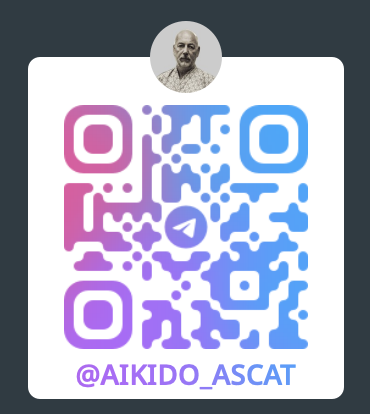

Контакты Московский Клуб (Коротков Алексей): +7 903 773‑56‑55 - WhatsUp: Алтайская Школа, Аскат (Золотарёв Андрей): +7 916 044‑04‑44 - Email: zolandv@gmail.com - Telegram:  В Telegram мы выкладываем материалы, которые посчитали интересными или полезными, а так же наши школьные практики